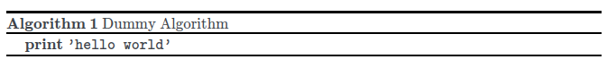
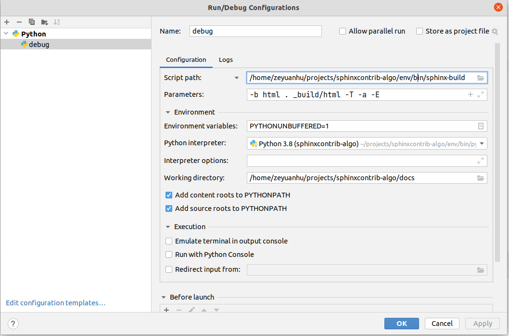

Release of sphinxcontrib-pseudocode
To celebrate the release of sphinxcontrib-pseudocode, the first sphinx-doc extension I have ever written, I document some implementation details behind this extension.
Introduction
sphinxcontrib-pseudocode allows one to write \(\LaTeX\) algorithm
(using algpseudocode package, in specific) within sphinx-doc. The horsepower of doing so comes from
pseudocode.js. The extension itself simply streamlines all the
setup steps required by pseudocode.js and allows user to directly type \(\LaTeX\) algorithms within a sphinx-doc
directive pcode, which is introduced
by this extension. The pseudocode.js specific html block and javascript (js) rendering code are automatically handled by the extension.
The rest of html generation steps, as usual, are done by sphinx-doc rendering engine.
There aren't many choices when coming to write algorithms within sphinx-doc. To my best knowledge, I only able to find sphinx-proof that offers this cability. However, I think sphinx-proof is suitable to write simple algorithms on very high level (e.g., I haven't able to find a way to write explicitly for loop quite nicely using this extension). Thus, I think being able to write algorithm using \(\LaTeX\) is a nice add-on in this niche territory.
Background
I built this extension based on sphinxcontrib-mermaid. Thus, a plenty
of boilerplate steps have been done (e.g., properly set up python package, etc). The major development effort is spent
on modification to python files under sphinxcontrib directory; in particular,
pseudocode.py.
To understand implementation details behind sphinxcontrib-pseudocode, we first need to understand how to use pseudocode.js. README of pseudocode.js provides detailed steps. Here, I highlight some of the steps that are related to the implementation detailed later:
-
After including the necessary js dependencies, we can embed our \(\LaTeX\) algorithm within a html block
<pre id="quicksort" style="display:hidden;"> <!-- our LaTeX algorithm --> </pre> -
To render the algorithm, we need to specify
idof the algorithm html block in the following js render code. In this example, theidisquicksort. We then need to put this render code at the end of the document. As shown in pseudocode.js example, this piece of code sits right before we close<body>tag. If there are multiple algorithm blocks within a page, we need to assign each block with an unique id and add correspondingrenderElementfunction call as well in the above<script>block.<script> pseudocode.renderElement(document.getElementById("quicksort")); </script> -
pseudocode.js can take options that allow user to tweak rendering behavior. As an example, we can pass in
lineNumberto a js render function to indicate we want to line numbering the algorithm that the js render function associated with:pseudocode.renderElement(document.getElementById("quicksort"), { lineNumber: true });
The usage of pseudocode.js exposes a few requirmenets we need to handle in our extension:
- We need to assign unique
idto each algorithm block. - Each algorithm block has to be associated with a
renderElementfunction, which itself may take extra options that are supported by pseudocode.js (e.g.,lineNumber). - the
<script>block that contains render functions needs to be placed at the bottom of html page.
Implementation Details
Now, we start to detail the implementation idea behind sphinxcontrib-pseudocode and introduces a few concepts around writing extenstion to sphinx-doc rendering engine.
Generating Unique IDs
To generate unique id to each algorithm block, I use
uuid.uuid4().
Note
add_node() is used to add a new Docutils node class to the sphinx-doc build system. During this function call, we specify the visitor function that can be used to render html code during the Phase 4 (Writing) of the sphinx-doc build phases 1.
id created from uuid are stored in Docutils node, which can then be referenced during sphinx-doc build phases. In specific,
we can reference id attribute of the node to fill the id into the html template
so that sphinx-doc produces html algorithm block during the html generation.
Handling JS scripts and code
There are two parts that the extension needs to deal with js:
-
We need to install pseudocode.js and its dependencies at the very beginning of the phase when Sphinx-doc needs to convert the parsed document (i.e., a tree of Docutils nodes) into an output format (i.e., html). This is because we need to let Sphinx-doc includes those necessary js scripts at the beginning of the html document being produced.
-
We also want to create corresponding pseudocode.js render function calls so that all the algorithm html blocks can be rendered properly. That means:
- we need to fill those function calls with
ids we just created - create the exact same number of render functions as the number of algorithm blocks
- able to pass in specific options if a
pcodedirective contains specific options - put those js functions at the end of html document
- we need to fill those function calls with
Let's talk about each part in more details. The core concepts from sphinx-doc to our implementation are events and associated events handlers. Essentially, sphinx-doc will emit different events during its build phase and our extension can register associated event handlers to perform certain tasks when certain events happened.
The first important event is builder-inited. This is the time when we need to supply pseudocode.js and its dependencies. Builder is the object that takes care of converting the parsed document into an output format. In specific, we use add_js_file to add pseudocode.js. We also add css files as well 2.
Note
When builder-inited event happens, the document has been parsed yet. This means sphinx-doc
doesn't encounter our pcode directives yet. Thus, the number of algorithm blocks are unknown.
Thus, we cannot generate render functions at this time.
There is one limitation about sphinx-doc that shapes how we handle part 2. That is, to my best knowledge, sphinx-doc doesn't provide
a way to insert <script> right before <body> tag close (as stated in pseudocode.js usage guide) during the build. This means,
all js related elements (depenendent scripts, js function calls) have to appear at the very beginning of the document. In my experiment
with pseudocode.js, directly following example usage (i.e., <script> block with renderElement calls) cannot render the algorithm
blocks successfully. I'm no javascript expert but as suggested by multiple sources (1,
2), I can use DOMContentLoaded
to make pseudocode.js render functions work properly after the whole html document is loaded. As a result, I can put all the js elements at the
beginning of the html document.
My implementation for part 2 follows sphinxcontrib-katex closely.
The very first thing to do is to gather all ids we have created so that we know how many renderElement function calls we need. We do so when
doctree-resolved event happens. When this event happens, the
parse tree of Docutils node (i.e., doctree) has been created. Thus, we can access all pcode nodes. I follow TODO extension example
to traverse the doctree and collect ids.
In addition to ids, we also any options that each pcode directive specifies.
Once we have collected ids and options, we can generate a js script called katex_autorenderer.js,
which contains all renderElement function calls. As an example, it looks like
document.addEventListener("DOMContentLoaded", function() {
pseudocode.renderElement(document.getElementById("37667c0e-b9e7-489f-b48e-d64117042cd2"), {lineNumber: true});
pseudocode.renderElement(document.getElementById("37c7acbe-a36a-4260-a464-9fd6bff71a3c"), {lineNumber: true});
pseudocode.renderElement(document.getElementById("2bace0ba-4113-4766-b226-13c7a6456925"));
pseudocode.renderElement(document.getElementById("bb8f4069-52bd-48d0-b782-9d4b0038f2ec"));
pseudocode.renderElement(document.getElementById("6f8008db-5388-46c6-938e-837c763d7ed9"));
});
Note
We cannot register katex_autorenderer.js at doctree-resolved event but we can do so instead at html-page-context.
That's where install_js2_part2 comes from:
we have to split js generation and js registration in two phases.
Support References
Support since 0.5.0
One important feature is to allow one easily reference the algorithm written in pcode directive.
As documented in this issue,
there are two considerations on how to implement this feature:
-
Like recipe extension example, we can add special reference role like
:recipe:ref:to reference any paritcular algorithm. -
Alternatively, just like figure, table, or sections, we can use numref role to reference
pcodedirectives as well.
I use the 2nd option. To implement such feature, we need to leverage add_enumerable_node API. To understand how to use it, let's take a closer look at how :numref: works with figure.
Suppose, in rst document, I have
.. _l7-fig2.3:
.. figure:: /_static/linear-programming/l7-fig2.3.png
A toy example of LP
This code is rendered as
<figure class="align-default" id="id13">
<span id="l7-fig2-3"></span>
<img alt="../_images/l7-fig2.3.png" src="../_images/l7-fig2.3.png">
<figcaption>
<p>
<span class="caption-number">Fig. 97 </span>
<span class="caption-text">A toy example of LP</span>
<a class="headerlink" href="#id13" title="Permalink to this image">¶</a>
</p>
</figcaption>
</figure>
id13 is the numbering automatically incremented by add_eumerable_node API. l7-fig2-3 is the reference label, which
has to be unique. Then the structure of the HTML code is: <figure> corresponds to figure:: directive and
<img> is the actual content (i.e., image) of the directive. Caption indicated by <figcaption> follows content immediately.
Thus, in practice, we use three docutils nodes to correspond these three components (directive, content, caption).
The best way to learn how to use add_enumerable_node is to study
stuffCounter code repository.
In fact, as shown by this code, there is a much simpler way to use add_eumerable_node API if the directive has a required caption option. Then, we can directly pass a caption getter function to the API. The reason we need to use three nodes implementation style is that we want to set \(\LaTeX\) algorithm numbering
the same as pcode reference numbering. As an example, suppose we have the code
.. _dummy-algorithm:
.. pcode::
\begin{algorithm}
\caption{Dummy Algorithm}
\begin{algorithmic}
\PRINT \texttt{'hello world'}
\end{algorithmic}
\end{algorithm}
Then, it will be rendered as

The algorithm has numbering 1. Then, when we reference the algorithm via :numref:`dummy-algorithm, we want to have "Algorithm 1" rendered in
HTML as well. To do so, we extract the numeric part from id of the directive (e.g., 13 in id13 in the figure HTML example) and use
captionCount option offered by pseudocode.js to manually set \(\LaTeX\) numbering.
Development Environment Setup
To concludes this post, I describe the setup I have for extension development. I reference this post and code for my setup. Here is my configuration in PyCharm

The central idea is to run/debug demo docs using sphinx-build.
Since the whole project is organized as a python package, we need to modify conf.py
to allow the demo docs to automatically find the extension source code but not via python package installation.
Conclusion
That's all I have to say about implementing sphinxcontrib-pseudocode. Hope this post becomes useful when you build your own extension to sphinx-doc.
-
You can also see the explanation in the "TODO" extension provided by sphinx-doc. ↩
-
I also reference how sphinx-doc installs MathJax.js for this part. ↩